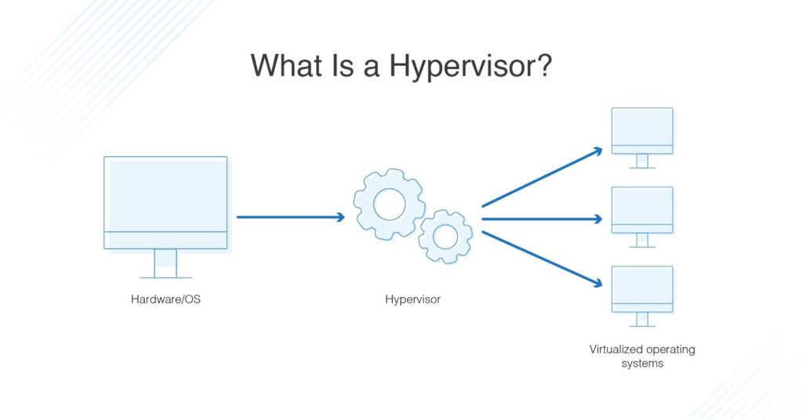

How A Virtual Machine Works
Virtual machines function by introducing a hypervisor to the host system to virtualy allocate the hosts computing resources to each VM. When a hypervisor allocates a resource such as CPU cores or RAM, it tells the host machine that those are being used and to not try and use them for istelf while the VM is running. On the VMs side when it is given access it will think that the resources given to it are the resources pyhsicaly installed to its machine leting the OS think it is on its own dedicated machine even though it is running on a protion of the real physical machine.

DNSstuff